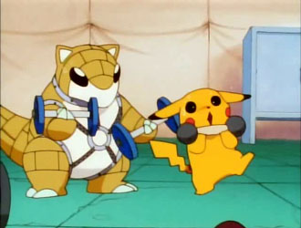

This POKéMON curls up to protect itself from its enemies.
SANDSHREW's body is configured to absorb water without waste,
enabling it to survive in an arid desert.
SANDSHREW has a very dry hide that is extremely tough.
The POKéMON can roll into a ball that repels any attack.
At night, it burrows into the desert sand to sleep.
First Introduced in Generation One of the Pokemon Game Series. they evolve into one of the fastest Generation One Pokemon SandSlash. It is a Ground Type that later got an Ice Type Varient in newer games.
>

I first saw this cute little guy in the anime, were he beats the protaganist easily with his immunity to electic attackks and super effective ground moves.